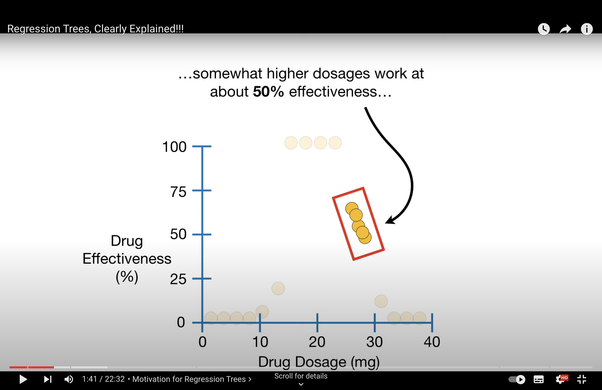

week9 lec 2#
Decision Tree#
Random Forest#
Regression Tree#
When to use RT - data’s distribution is wired.
{kind=link}
How to build RT - use mean value on node, evaluate with RSS i.e. We decide the splitting criteria based when RSS is minimum.
Question
When to stop splitting (to prevent overfitting)?
Answer
This can be done by setting the stopping criteria. Which is usually the number of observations on each node. Usually 20. So when there are <= 20 observations on a node, we will end splitting and call that a leaf. n
{kind=link}
Question
What if multiple features in regression tree?
Answer
We compare the lowest RSS of each feature can select the lowest RSS among the lowest RSSs as the splitting criteria for the first node and so on.
{kind=link}
Question
Why regression tree are prone to overfitting?
Answer
Regression trees, like all decision trees, can exhibit high variance for several reasons. Understanding these reasons requires looking at the nature of decision trees and how they fit data:
Overfitting to Training Data: Decision trees, including regression trees, often tend to overfit the training data. This happens because they can create very complex structures that capture not just the underlying patterns in the data but also the noise. For example, a regression tree might create splits to fit outliers or anomalies in the training set, which are not representative of the broader data distribution.
Sensitive to Small Changes in Data: Regression trees can be quite sensitive to small changes in the training data. A slight change, such as the addition or removal of a few data points, can lead to a significantly different tree structure. This is because the choice of splits in a tree can be drastically altered by minor variations in data, resulting in different prediction paths.
High Complexity of Trees: If a regression tree is allowed to grow without constraints (like limiting the depth of the tree or setting a minimum number of samples required to make a split), it can become overly complex. A highly complex tree with many splits is more likely to capture noise in the data, leading to high variance.
Lack of Averaging or Regularization: Unlike ensemble methods (like Random Forests or Gradient Boosting), a single regression tree does not benefit from averaging out predictions over multiple models. Ensemble methods tend to have lower variance as they average out the individual variances of multiple models, whereas a single regression tree does not have this advantage.
Modeling Non-linear Relationships: Regression trees model non-linear relationships by making sequential, hierarchical splits on the data. While this can be powerful, it also means that the prediction is highly dependent on the structure of the tree. If the tree does not generalize well (i.e., it is too tuned to the training data), its predictions can vary widely with different datasets.
To mitigate high variance in regression trees, techniques like pruning (to simplify the tree), setting maximum depth, or employing ensemble methods (like Random Forests or Gradient Boosting) are commonly used. These techniques aim to balance the bias-variance trade-off, making the model more robust to variations in the training data.
Question
What are the negative results for overfitted model?
Answer
Poor Generalization to New Data: While the model performs well on the training data, its performance significantly deteriorates on new, unseen data (test data or validation data). This decline in performance is due to the model’s inability to generalize from overly specific patterns learned during training.
High Variance in Predictions: Overfitted models typically exhibit high variance. This means that small changes in the input data can lead to large changes in the output (predicted values). The model is too sensitive to the specifics of the training data and thus reacts unpredictably to new data.
Complex Tree Structure: In the case of a regression tree, overfitting is often accompanied by an overly complex tree structure. Such a tree will have many splits, possibly splitting down to very small subsets of the data, which are not representative of the overall data distribution.
Capturing Noise Rather Than Signal: An overfitted tree tends to model the random noise in the training data rather than the actual underlying trend. As a result, the tree’s predictive accuracy decreases when it encounters data that doesn’t have the same noise characteristics as the training set.
Unreliable Feature Importance: Overfitting can lead to a distorted view of which features are important for prediction. The tree might rely heavily on certain features that appeared to be informative in the training set but are not actually relevant for the overall population.
More questions#
Q
Suppose that we are not allowed to adjust the size of the training set (train_size). What else can we do to train a better random forest that might further reduce the test error? (5]
A
Parameter Tuning: Adjusting the hyperparameters of the Random Forest can lead to significant improvements in model performance. Key parameters include:
n_estimators: Increase the number of trees in the forest. More trees can improve model performance up to a point, as it reduces variance without increasing bias.max_depth: Set an optimal maximum depth for each tree to prevent overfitting.min_samples_splitandmin_samples_leaf: Adjust these to control the minimum number of samples required to split a node and the minimum number of samples required to be at a leaf node.max_features: Tune the number of features considered for each split. Trying different values (likesqrt,log2, or a fraction of total features) can significantly impact performance.
Feature Engineering: Improve the model’s performance by enhancing the feature set:
Create new features that might capture important information in the data more effectively.
Perform feature selection to remove irrelevant or redundant features, which can simplify the model and potentially improve its performance on test data.
Normalize or standardize features, especially if they are on different scales.
Ensemble Different Models: Combine the Random Forest with other models to create a more robust ensemble. This can be done by blending models (averaging their predictions) or stacking (using the predictions of base models as inputs to a higher-level model).
Cross-Validation for Model Validation: Use cross-validation to assess the model’s performance more reliably. This helps in understanding how well the model is likely to perform on unseen data and in tuning hyperparameters more effectively.
Address Class Imbalance (if applicable): If dealing with classification and the data is imbalanced, techniques like adjusting class weights, using different performance metrics (like F1-score instead of accuracy), or employing sampling methods (like SMOTE) can improve model performance.